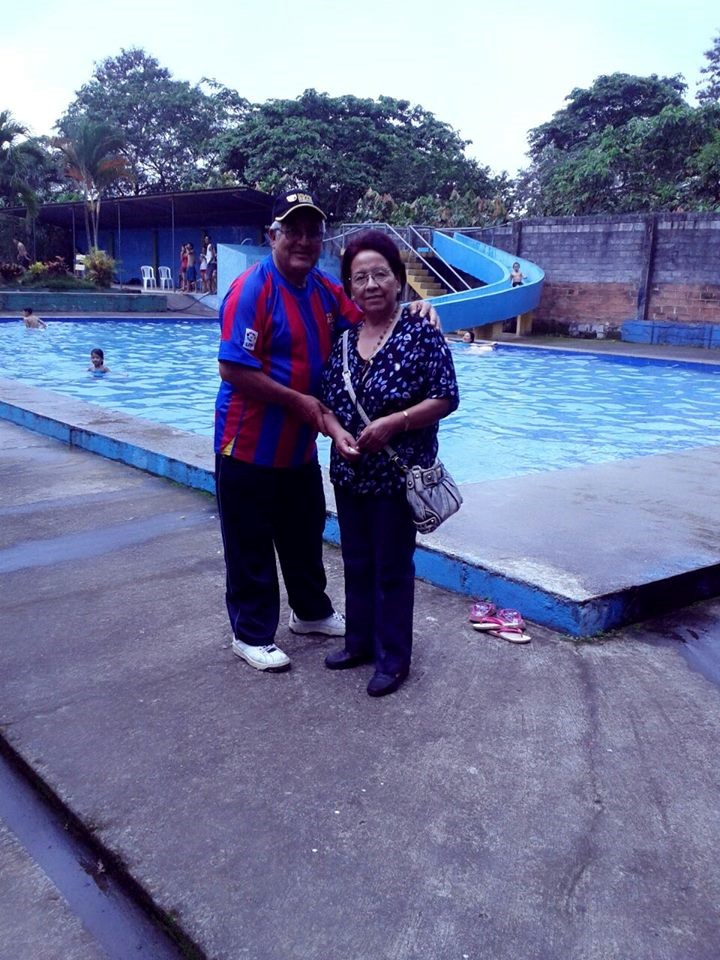
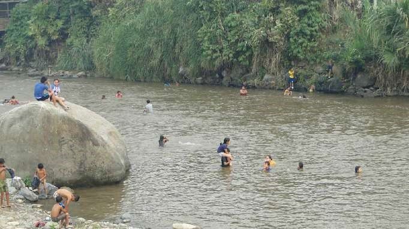
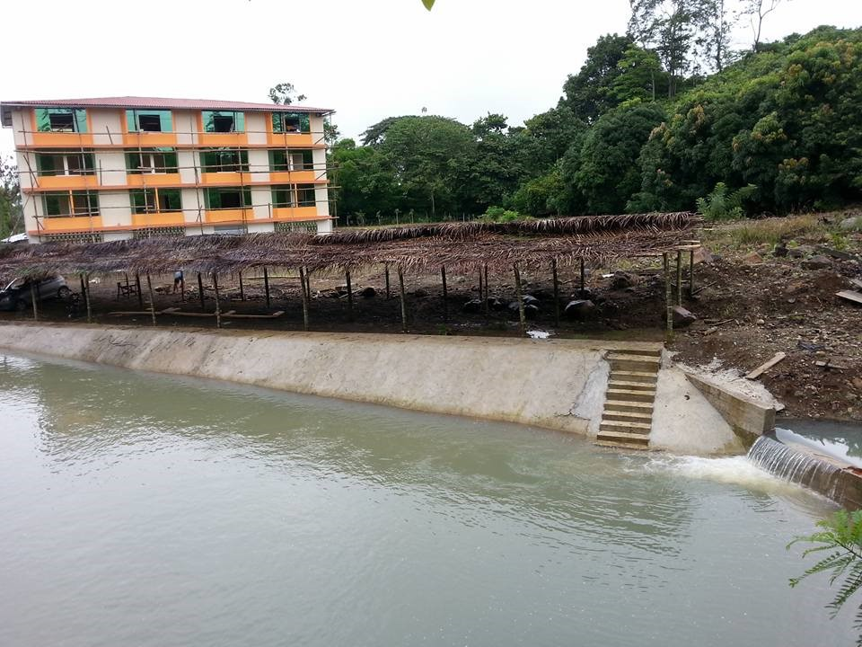
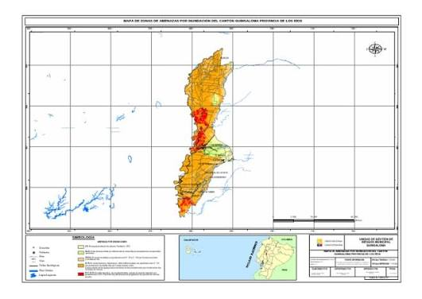

El cantón Quinsaloma está ubicado en la provincia de Los Ríos, Ecuador. Su nombre significa "Tres Lomas". Inicialmente fue parroquia rural del cantón Ventanas desde el 15 de noviembre de 1979 y se convirtió en cantón el 20 de noviembre de 2007, siendo uno de los cantones más jóvenes del Ecuador. Se caracteriza por su actividad agrícola, especialmente por la producción de cacao, café, maíz, arroz, banano y frutas tropicales. Además, cuenta con ríos, paisajes naturales y tradiciones de la cultura montubia.
El cantón Quinsaloma está conformado por 1 parroquia
quinsaloma.Es visitado porque cuenta con piscinas, toboganes, bar, pista de baile y restaurante. Es ideal para divertirse y compartir en familia.

Es un balneario natural ubicado junto al río Umbe. Es atractivo por sus paisajes, vegetación y ambiente natural, especialmente durante los fines de semana y feriados.

Es un lugar apropiado para visitar en familia porque cuenta con una piscina de agua natural, bar, restaurante y espacios para practicar deportes como fútbol y actividades en canoa.

El actual alcalde del cantón Quinsaloma es el ingeniero Cristhian Danilo Aldaz González, quien ejerce sus funciones durante el período 2023-2027. Está encargado de dirigir la administración municipal y promover obras y proyectos para el desarrollo y bienestar de sus habitantes.
Según el Censo de Población y Vivienda de 2022 del INEC, el cantón Quinsaloma cuenta con 21.138 habitantes.
